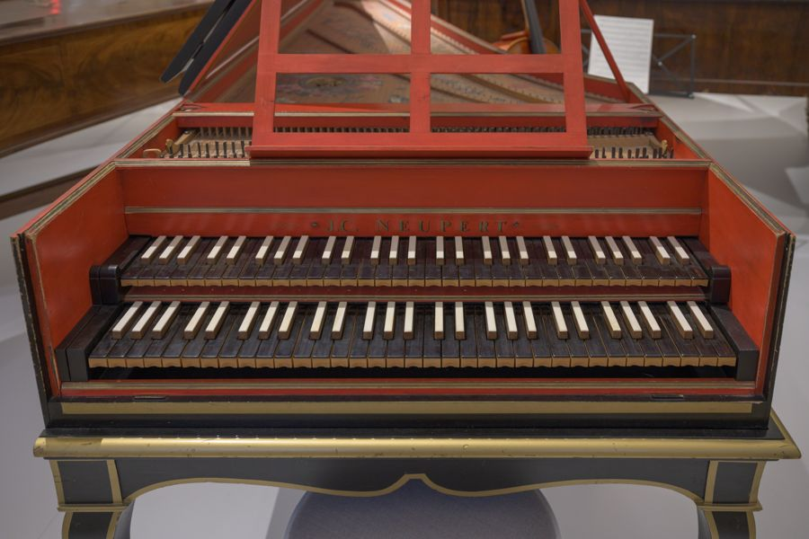
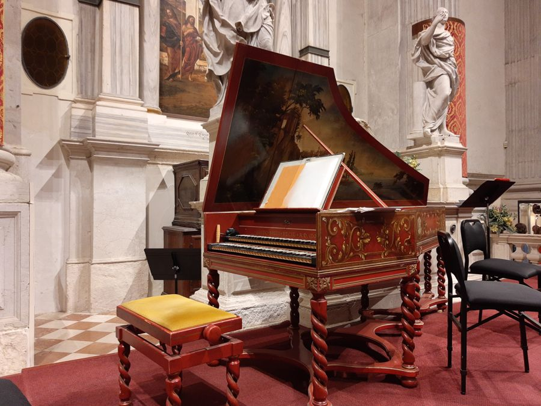
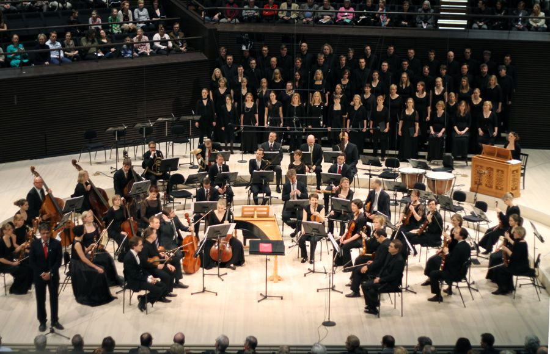
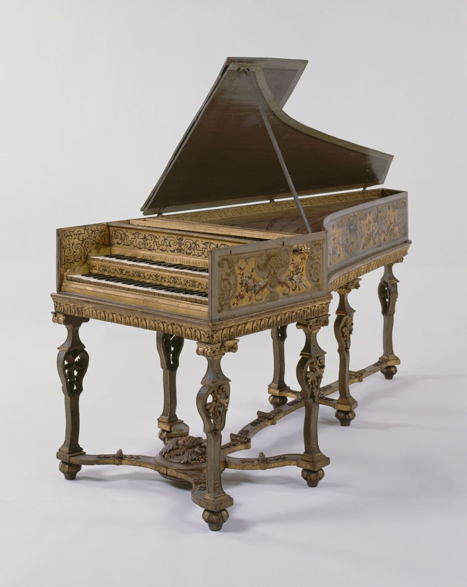
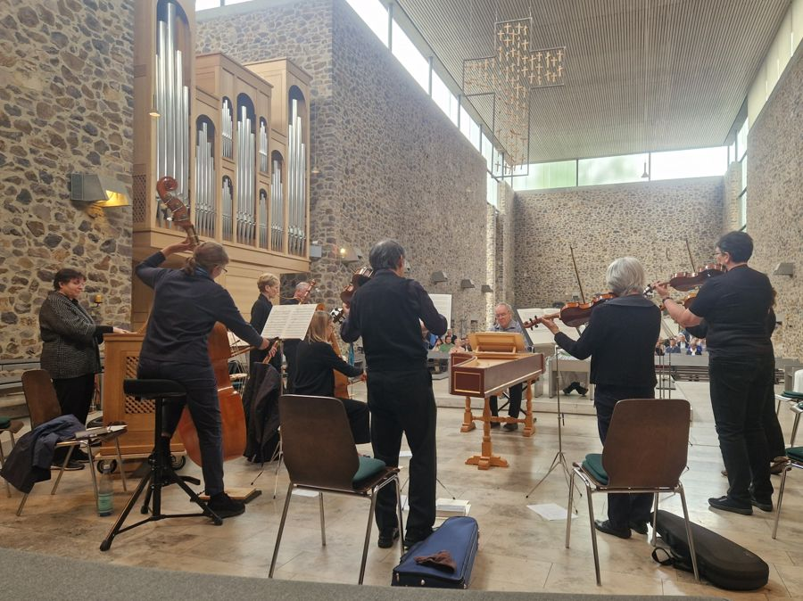
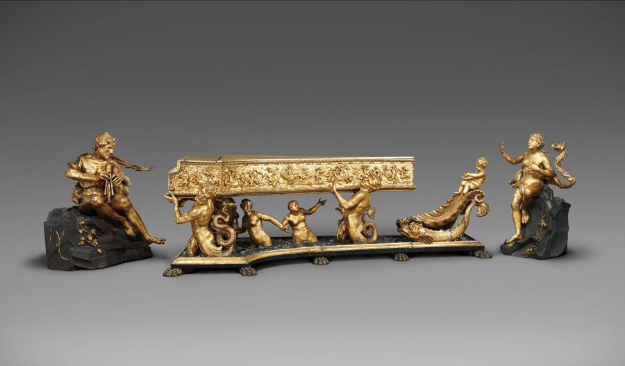
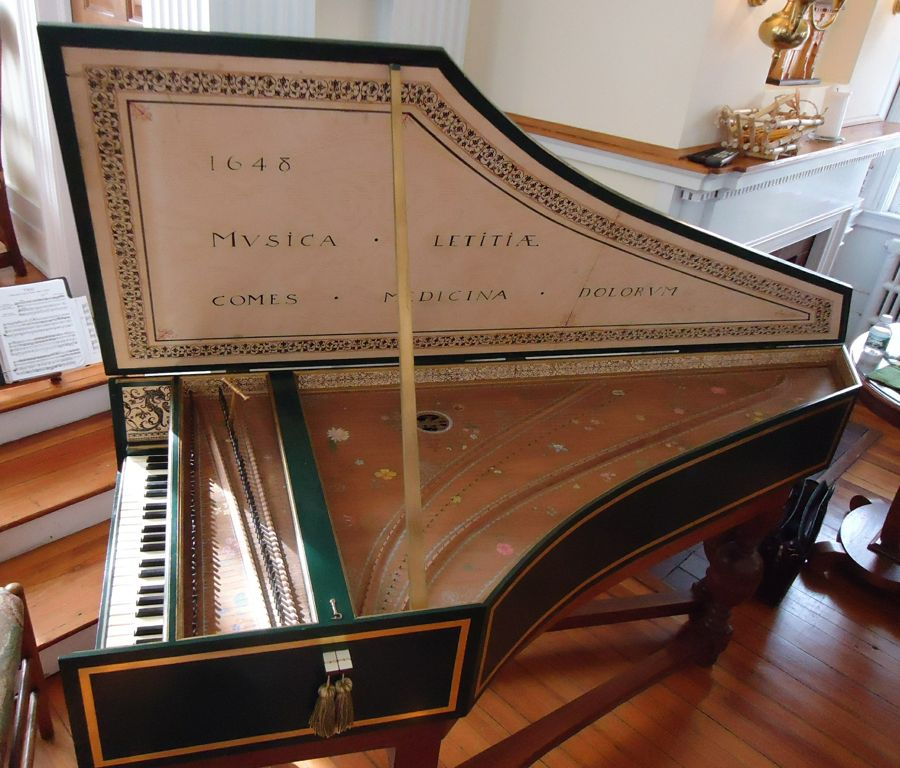

Über mich
Musik, die zuhört
Seit ich mit fünf Jahren zum ersten Mal am alten Cembalo im Haus meiner Großmutter saß, begleitet mich die Frage, wie ein einzelner gezupfter Ton einen ganzen Raum verändern kann.
Aufgewachsen in Freiburg, erhielt ich meinen ersten Unterricht an der dortigen Musikschule und wechselte mit sechzehn als Jungstudentin an die Hochschule für Musik und fand dort im Institut für Alte Musik meine musikalische Heimat. Es folgten Studienjahre in Leipzig und Wien, Meisterkurse und prägende Begegnungen mit Lehrerinnen und Lehrern, die mir vor allem eines beigebracht haben: geduldig zu hören.
Heute spiele ich Cembalo-Rezitale, Kammermusik und Basso continuo in Konzertsälen, Kirchen und auf Festivals im In- und Ausland. Mein Repertoire reicht von den englischen Virginalisten über Bach, Couperin und Rameau bis zu zeitgenössischen Werken für Cembalo; besonders am Herzen liegen mir die Sonaten Scarlattis, die Suiten Bachs und die oft übersehenen Werke von Komponistinnen wie Élisabeth Jacquet de La Guerre.
Neben dem Konzertieren unterrichte ich leidenschaftlich gern – in Meisterkursen und mit einer kleinen eigenen Klasse.
„Das Schönste am Cembalo ist der Moment, bevor der erste Kiel die Saite anreißt.“
- Ausbildung
- Freiburg · Leipzig · Wien
- Schwerpunkte
- Bach, Couperin, Scarlatti, Komponistinnen des Barock
- Formate
- Rezital, Kammermusik, Basso continuo, Meisterkurs
Konzerte
Termine
- Termine werden geladen …
Galerie
Bilder














Kontakt
Anfragen & Engagements
Für Konzertanfragen, Presse und Unterricht schreiben Sie mir gern.
kontakt@example.org